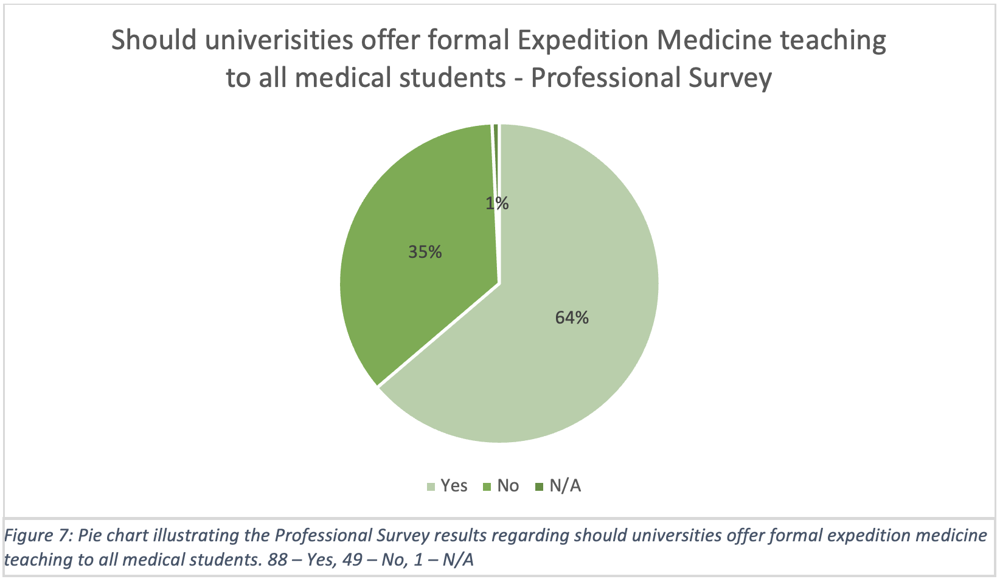
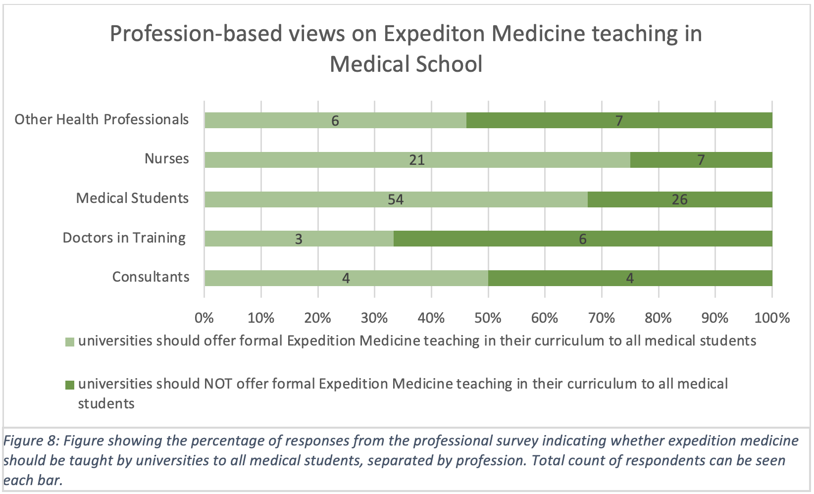
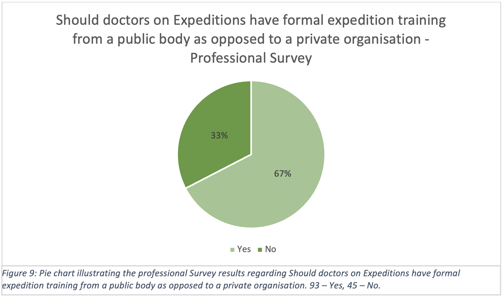
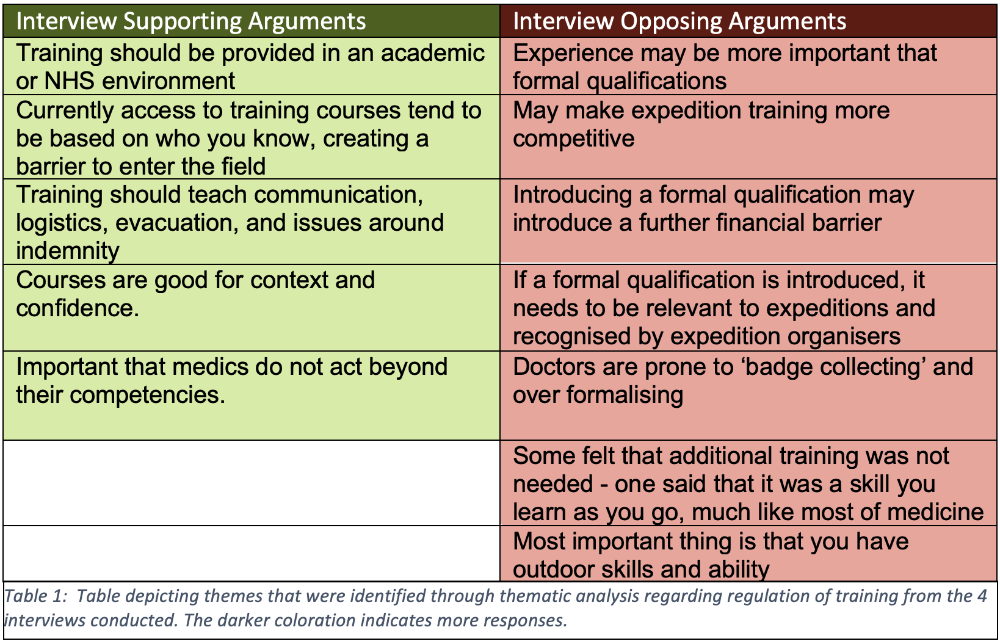

One of the principal arguments in favour of establishing Expedition Medicine as a specialty is that it would formalise the training requirements to practise as an expedition medic. Currently, there is no official accreditation required for doctors to practise as an expedition medic, which could lead to substandard care for expedition participants. For this reason, some argue that, irrespective of its status as a specialty, there is a pressing need for tighter training regulations to be introduced.
University Curriculum
A potential avenue for formalising Expedition Medicine training could be to include it in undergraduate medical school curricula. One of the questions included in the survey of healthcare professionals was on the inclusion of Expedition Medicine in university medical curricula. These results showed that 63.8% (88/138) of respondents supported the integration of formal Expedition Medicine teaching into medical school curricula for all medical students (Figure 7). However, the level varied among professions, with only 41.2% (7/17) of doctors in favour, compared to 67.5% (54/80) of medical students, and 65.9% (27/41) of other healthcare professionals (Figure 8).
Undergraduate education did not emerge as a prominent theme in the semi-structured interviews, and the survey only explored closed questions on the matter. Therefore, our findings lack sufficient data to elucidate the reasons for these inter-profession differences. Nonetheless, the absence of undergraduate Expedition Medicine training in the interviews could suggest that it is of lower priority for practising doctors. This contrasts with medical students’ relative enthusiasm for the subject, possibly reflecting changing attitudes towards medical education and the profession as a whole. However, caution should be taken when drawing conclusions as the self-selected sample of survey respondents is likely to have attracted medical students that are particularly interested in Expedition Medicine, and thus these results are unlikely to represent the wider population of medical students.
 Postgraduate Training
The establishment of a medical specialty necessitates a postgraduate curriculum that is approved by the GMC. Currently, there are various postgraduate courses offered by universities and private companies in the UK in areas such as expedition, extreme, or wilderness medicine. However, it should be noted that these courses are not accredited by a governing body such as the GMC, nor mandatory to practise as an expedition medic.
According to our professional survey, 67.4% (93/138) of respondents agreed that “doctors on expeditions should have formal expedition training from a public body (ie. NHS) as opposed to a private organisation” (Figure 9). This contrasts with the thematic analysis of the interviews, where there were nine comments against regulated training and five comments for regulated training (Table 1).
Some interviewees in favour of formalised training stated its potential benefits, including enhanced confidence among expedition medics, and its importance in teaching communication, logistics and potential indemnity issues. Proponents felt that academic or NHS settings would be more appropriate to deliver such training, as access to current training courses tends to be based on personal connections, creating a barrier to entry.
In contrast, opponents of formalised training contended that mandated training would not have benefited them personally, and that outdoor skills were more relevant. Some interviewees expressed concerns that formalising training could create additional barriers to entering the field, either through course cost or increased competitiveness. They were apprehensive that approved courses may become tick-box exercises instead of high-quality programmes formally recognised by expedition companies.
A 2013 independent review of the quality of UK postgraduate medical education, called the Shape of Training Report, identified the need for more flexibility in the training pathways of e xisting specialties (6). The rigidity of training programmes was also a theme that was highlighted in our interviews. When designing a new training pathway, it would be important to address these concerns to ensure high-quality training and trainee engagement.
The divergent views within our interview sample highlight both the opportunities and challenges of introducing formalised Expedition Medicine training. These factors necessitate careful consideration when making decisions regarding the future of the field
  Return To Findings“This site was made by a group of University of Edinburgh medical students who studied this subject as part of the SSC. This webfolio has not been peer reviewed. We certify that this webfolio is our own work and that we have authorisation to use all the content (e.g. figures / images) used in this webfolio”
Tutor = Dr Oliver Vick (Oliver.Vick@ed.ac.uk)
Word Count = (insert later)
Home